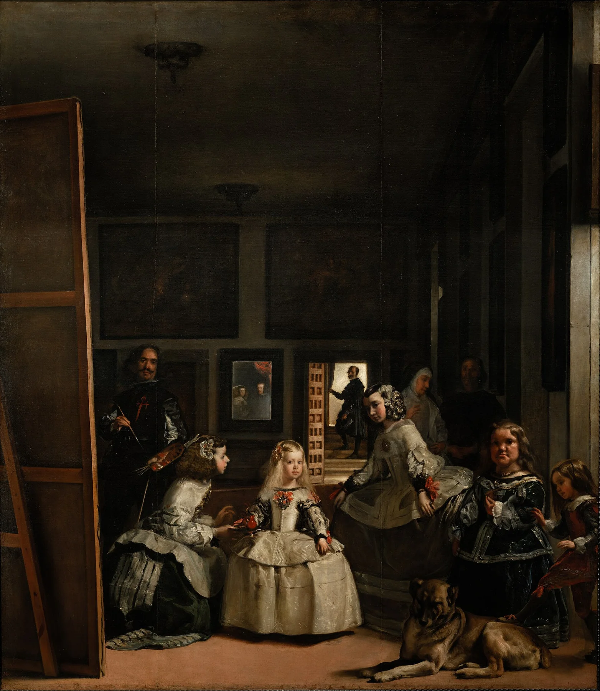

右と左、上と下を比べて「重く見える側」を探す。釣り合い方を見ると構図が分かりやすくなる。
「バランスのいい絵」と聞くと、左右対称で整っている画面を想像しがちです。でも実際には、片側に大きな人物がいても、反対側の小さな明るい色や余白で釣り合って見えることがあります。重さを測るように画面を見ると、構図がかなり分かりやすくなります。
1. この見方を知ったきっかけ
この「絵の見方」シリーズは、『絵を見る技術』で知った見方を参考にしながら、専門知識のない自分でも美術館で実際に試せるように整理しています。用語を覚えることより、作品の前で一つ試してみることを目的にしています。
2. バランス＝左右対称ではない
絵のバランスというと、左右に同じものが置かれた状態を想像しがちです。でも実際の絵では、片側に大きな人物がいて、反対側には小さな人物や明るい空だけ、ということもあります。
大切なのは形が同じかではなく、見たときの重さがどう釣り合っているかです。
ここでいう重さは、本当に重い物が描かれているという意味ではありません。大きい、暗い、色が強い、顔がある、細かく描き込まれている。そういう場所ほど、目が長く止まりやすく、視覚的には重く感じられます。
逆に、何も描かれていない余白は軽そうに見えますが、広く取られると画面全体を大きく支えることがあります。物の数だけでなく、空いている場所まで含めて「左右の重さ」を比べるのがポイントです。
3. 大きい形は視覚的に重く見える
画面の右に大きな人物がいれば、右側は重く感じやすくなります。左に小さな人物を何人か置くことで釣り合う場合もあります。
人物だけでなく、大きな建物、暗い木、広い山なども同じです。
4. 暗い色・強い色も重さを持つ
同じ大きさでも、真っ黒な形と淡い灰色の形では黒い方が強く見えます。鮮やかな赤の小さな部分が、大きな薄い背景と釣り合うこともあります。
面積だけでなく、色と明暗も「重さ」として見てみます。
たとえば同じ大きさの形が左右にあっても、片方だけ真っ黒で、もう片方が淡い灰色なら、黒い方へ目が引かれます。色の鮮やかさも同じで、小さな赤一点が大きな茶色の面と釣り合うことがあります。面積と強さを別々に見ると理解しやすくなります。
5. 人の顔は小さくても重い
人物の顔や目は、画面の中で非常に強い要素です。小さな顔一つが、大きな風景と釣り合うこともあります。
さらにこちらを見ている顔は存在感が増します。単純な面積では測れない重さがあります。
6. 何もない余白もバランスを作る
画面の片側に何も描かれていない空や壁があると、「空っぽ」に見えます。でも、その余白が反対側の人物を強く見せることがあります。
余白を不足ではなく、重さを調整する要素として見ると面白くなります。

7. わざと不安定にする絵もある
すべての絵が安定している必要はありません。人物が片側へ寄り、斜め線が多く、今にも倒れそうな構図は、緊張や動きを生みます。
「バランスが悪い」ではなく、「なぜこの不安定さを残したのか」と見ると、作品の表情が変わります。
むしろ少し崩れたバランスが、画面に緊張感や動きを作ることもあります。人物が片側へ寄っている、斜めの線が一方向へ流れている、空間が一方だけ大きく空いている。見ていて落ち着かないと感じたら、「バランスが悪い」と終わらせず、その不安定さが何を生んでいるかを見ると面白くなります。
8. 画面を頭の中で半分に割ってみる
作品を縦半分に分け、右と左に何があるかを見る。次に横半分にして、上と下を比べます。
どちらが重いか、同じくらいか。理由は大きさか、色か、人物か。この簡単な比較だけでも、構図の骨組みが見えやすくなります。
近くで細部を見たあと、二、三歩下がって全体をぼんやり見るのも効果的です。細かな物語を読まなくても、「右が重い」「上が明るい」「左に余白が多い」といった大きな重心は離れた方が分かりやすいことがあります。
右と左、上と下を比べて「重く見える側」を探す。釣り合い方を見ると構図が分かりやすくなる。